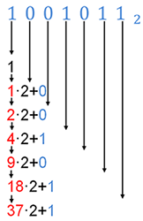
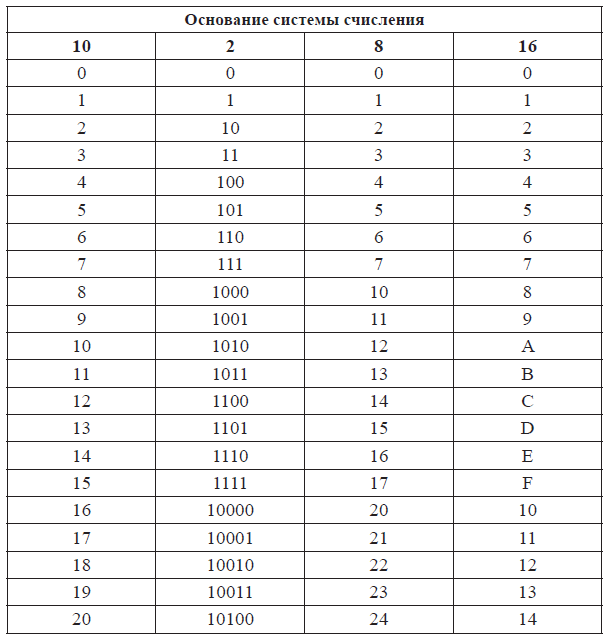
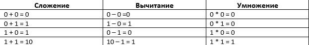
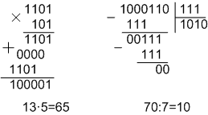

Переводы из одной СС в другую
Чтобы перевести число из любой системы счисления в десятичную, нужно записать это число в развёрнутой форме и выполнить вычисления в десятичной системе. Например:
156789 = 1*94 + 5*93 + 6*92 + 7*92 + 8*90 = 6561 + 3645 + 486 + 63 + 8 = 1076310
100010012 = 1*27 + 1*23 + 1*20 = 13710
AF5116 = 10*163 + 15*162 + 5*16 + 1 = 4488110
Чтобы перевести число из десятичной СС в любую СС, нужно последовательно делить это число на основание СС, пока не получим частное, равное нулю. Затем записать полученные частные наоборот, слева направо. Например, переведём число 13 в двоичную СС, а число 158 – в шестнадцатеричную.
Для быстрого перевода двоичного числа в десятичную СС можно использовать схему Горнера:
- Возьмем 1, соответствующую самому старшему разряду числа, и умножим её на 2
- Прибавим следующую цифру
- Умножим результат на 2
- Прибавим следующую цифру
- Умножим результат на 2
- Прибавим следующую цифру
- Умножим результат на 2
Также, для перевода можно использовать таблицы:

Арифметические операции с двоичными числами
Арифметические операции с двоичными числами производятся также, как с обычными. Однако, есть свои правила:

Например: 1011,22 + 10110,012 = 10110,012
Также можно предварительно перевести двоичные числа в десятичные, выполнить операцию и перевести десятичные числа обратно в двоичные:
